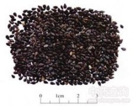

黑芝麻

拼音
Hēi Zhī Mɑ
别名
胡麻、油麻、巨胜、脂麻
来源
本品为脂麻科（胡麻科）脂麻属植物脂麻Sesamum indicum L.的干燥成熟种子。秋季果实成熟时采割植株，晒干，打下种子，除去杂质，再晒干。
生境分布
除西藏外，各省区均有栽培。主产山东、河南、湖北、四川、安徽、江西、河北。
药材特点
一年生草本，高达1m。茎直立，四棱形，稍有柔毛。叶对生或上部叶互生；上部叶披针形或狭椭圆形，全缘，中部叶卵形，有锯齿，下部叶3裂。花单生或2～3朵生叶叶腋；花萼长约6mm，裂片披针形；花冠白色或淡紫色，长约2.5cm。蒴果四棱状长椭圆形，长约2.5cm，上下几等宽，顶端稍尖，有细毛，种子多数，黑色、白色或淡黄色。花期5～9月，果期7～9月。
性状
本品呈扁卵圆形，长约3mm,宽约2mm。表面黑色，平滑或有网状皱纹。尖端有棕色点状种脐。种皮薄，子叶2,白色，富油性。气微，味甘，有油香气。
性味
甘，平。
功能主治
补肝肾，益精血，润肠燥。用于头晕眼花，耳鸣耳聋，须发早白，病后脱发，肠燥便秘。
用法用量
9～15g。
化学成分
含脂肪油，为油酸、亚油酸、棕榈酸、硬脂酸、花生酸等甘油脂，并含芝麻素（sesamin）、芝麻林酚素（sesamolin）、芝麻酚（sesamol）、胡麻甙（pedaliin）、车前糖（planteose）、芝麻糖（sesamose）等。
药理作用
1：．降血糖作用：种子提取物给大鼠口服：可降低血糖，增加肝脏及肌肉中糖元的含量，但大剂量则降低糖元含量
2：．促肾上腺作用：黑芝麻0.2ml／100g体重喂饲大鼠：可增加肾上腺中抗坏血酸及胆固醇含量
3：．抗炎作用：灭菌的芝麻油涂布皮肤粘膜：有减轻刺激，促进炎症恢复等作用
4：．致泻作用：种子有致泻作用
5：．对心血管作用：黑芝麻中的亚油酸可使血中胆固醇含量降低：有防治冠状动脉硬化的作用
摘录
《中国药典》